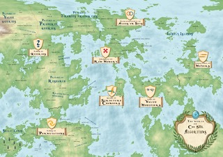

Összetett feladatok az STL-hez
Czirkos Zoltán · 2020.02.08.
Összetett feladatok, rövid megoldásokkal. Lényeg, hogy minél több elemet használjunk az STL-ből!
Labor otthoni munkában
A labor teljesítéséhez legalább az első három feladatot meg kell oldani.
Javaslat a munkához: előbb gondold végig mindig fejben vagy rajzon, milyen adatokat szeretnél tárolni, és hogy azokon milyen algoritmust szeretnél futtatni. Ebből következik majd, hogy milyen tárolót keresel a megoldáshoz. Ha nem így teszel, több órányi kemény kódolással spórolsz meg magadnak pár perc gondolkodást....
Az alábbi feladatoknál az a cél, hogy minél több STL elemet használj! Néhol funktorokat kellhet majd írni, ehhez használhatsz lambda függvényeket, vagy klasszikus funktor osztályokat is.
Van egy program, amelyik Stroustrup minden könyvében szerepel (az újban is: http://www.stroustrup.com/Programming/). Ebben statisztikát kell készíteni a szabványos bemenet szavairól: kiírni őket ábécében, és melléjük írni, melyik hányszor szerepelt. Ez std::map-pel ilyen egyszerű:
int main() {
std::map<std::string, int> m;
std::string s;
while (std::cin >> s)
++m[s];
for (auto p : m)
std::cout << p.first << " " << p.second << std::endl;
}Rendezve kapjuk az elemeket, mert a map a sztring szerint rendezve tárol (bináris fában); az indexelő operátor pedig kényelmes, mert a nem létező elemet a megindexeléskor létrehozza.
alma korte barack barack
alma 1 barack 2 korte 1
A feladat (szintén az új könyvéből): írd át úgy a programot, hogy ne ábécé sorrend szerint, hanem gyakoriság szerint rendezve írja ki a szavakat! Bármilyen STL tárolót használhatsz. Sőt a feladat egészen konkrétan ez: írd meg úgy a programot, hogy minél inkább az STL elemeit használod!
1 alma korte 2 barack
Első tipp
Ne töröld ki a meglévő kódot! Elsőre felépíteni azt a tárolót, amiben gyakoriság szerint vannak csoportosítva a szavak, nagyon nehéz lenne. A feladat igazából az, hogy a meglévő tárolót feldolgozva építs fel egy másikat.
Második tipp
Ügyelni kell arra, hogy egy gyakorisághoz több szó is tartozhat. Például a fenti bemenetnél az almának és a körtének is 1 a gyakorisága. Csinálhatunk olyan leképezést, aminél a gyakoriság a kulcs, de akkor egy kulcshoz több értéket is kell tárolni.
Megoldás
A megoldás pl. egy map<int, vector<string>> lehet; ez egy kulcshoz több értéket is tud tárolni.
Az alábbi mintamegoldás a hecc kedvéért nem tartalmaz ciklust.
#include <iostream>
#include <map>
#include <string>
#include <iterator>
#include <algorithm>
#include <vector>
int main() {
std::map<std::string, int> m;
for_each(std::istream_iterator<std::string>(std::cin),
std::istream_iterator<std::string>(),
[&] (std::string s) {
++m[s];
});
std::cout << "Szavak szerint:" << std::endl;
for_each(m.begin(), m.end(), [] (auto p) {
std::cout << p.first << " " << p.second << std::endl;
});
std::cout << "Gyakoriság szerint:" << std::endl;
std::map<int, std::vector<std::string>> mm;
for_each(m.begin(), m.end(), [&] (auto p) {
mm[p.second].push_back(p.first);
});
for_each(mm.begin(), mm.end(), [] (auto p) {
std::cout << p.first << " ";
std::copy(p.second.begin(), p.second.end(), std::ostream_iterator<std::string>(std::cout, " "));
std::cout << std::endl;
});
}Hogy működik a lenti kód? Mi történik itt?
#include <utility>
#include <tuple>
#include <iostream>
struct Time {
int h, m;
};
struct Date {
int y, m, d;
};
bool operator<(Time t1, Time t2) {
return std::make_pair(t1.h, t1.m) < std::make_pair(t2.h, t2.m);
}
bool operator<(Date d1, Date d2) {
return std::make_tuple(d1.y, d1.m, d1.d) < std::make_tuple(d2.y, d2.m, d2.d);
}
int main() {
std::cout << (Time{12, 15} < Time{13, 45});
std::cout << (Date{2011, 11, 11} < Date{2012, 11, 12});
}Megoldás
Az std::tuple hasonló az std::pair osztályhoz: egy ad-hoc adatcsomag, de nem
két elemből, hanem bármennyiből.
A pair érdekessége, hogy definiálja a relációs operátorokat, ==, !=
és a többiek. Ezek az operátorok előbb a first, aztán a second adattagot hasonlítják
össze. A tuple ugyanezt csinálja: megvizsgálja az első adatot, ha abból nem dől el, akkor a másodikat,
és így tovább. A dátumoknál pont ez kell nekünk: az év kisebb-e vagy nem; ha az
évek egyformák, akkor a hónap kisebb-e vagy nem, és végül a nap.
A mikulás ajándékokat visz végtelen, kétdimenziós rácson elhelyezkedő házakba.
Kezdetben beadja az ajándékot a kiindulási pozícióban lévő házba, utána pedig rádión kapja az utasításokat, merre kell tovább mennie: északra (^, kalap), délre (v, kis v betű), keletre (>) vagy nyugatra (<, kacsacsőrök). Minden lépés után bead egy ajándékot az új pozícióban lévő házba.
A gond csak az, hogy az utasítások kicsit össze-vissza vannak, ezért némely háznál többször is jár. Kérdés az, hogy hány házba vitt legalább egy ajándékot.
Például:
>két házba; egyik a kiindulási pozíció, másik pedig az attól keletre lévő.^>v<négy házba; a kiinduló házban így két ajándékot kapnak.^v^v^v^v^vrengeteg ajándékot kap két szerencsés gyerek.
Oldd meg a feladatot STL eszközökkel! Saját osztály definiálására nem lesz szükséged.
Tipp – a tároló
Minden háznál azt kell megjegyezni, hogy voltunk-e már ott, vagy nem. Azaz hogy láttuk-e már azt a pozíciót, vagy nem. Ha többször voltunk ott, az nem számít már. Ez egy matematikai fogalomhoz vezet.
Tipp – a pozíció
A pozíció egy egész számpárral adható meg.
Bemenő adat: santa.txt, erre a kimenet 2081 kell legyen. Mentsd el fájlként, mert copy-paste közben lemaradhat a második fele!
Megoldás
A megoldás egy halmaz, amelynek a számossága a kérdés. A pozíciót egy egész számpár (std::pair<int, int>) tárolhatja. Ez azért előnyös, mert annak van < operátora, amit amúgy a halmaz igényel.
#include <iostream>
#include <utility>
#include <set>
#include <sstream>
int main() {
std::istringstream is("^>v<");
using position = std::pair<int, int>;
std::set<position> visited;
position pos = {0, 0};
visited.insert(pos);
char c;
while (is >> c) {
switch (c) {
case '<': pos.first--; break;
case '>': pos.first++; break;
case '^': pos.second++; break;
case 'v': pos.second--; break;
}
visited.insert(pos);
}
std::cout << visited.size();
}A szituáció ugyanaz mint az előbb: a véletlenszerű bolyongás közben a házakba több ajándékot is visz. Vannak olyan szerencsés gyerekek, akik több ajándékot is kapnak, ha az ő házukat többször is érinti.
A kérdés: hol lakik a legszerencsésebb gyerek? Másképp fogalmazva: mi annak a háznak a koordinátája, ahova a legtöbb ajándék került? (Ha több egyforma van, akkor az egyik.)
Bemenő adat: santa.txt, erre a kimenet: 23 ajándék, a (-11;9) pozícióban (matematikában megszokott koordinátarendszer szerint, x jobbra, y felfelé).
Tipp – a tároló
A pozíciókat leképezzük egy egész számra: hány ajándék került oda.
Tipp – a maximumkeresés
Van, nem kell megírni: std::max_element. De hogy kell paraméterezni?
Megoldás
A tároló map<position, int> lehet. Ha egy ilyenen iterálunk, látjuk azt is,
hogy miket tartalmaz: pair<position, int>-eket, ahol p.first a kulcs
és p.second az érték. A maximumkeresésnél az értéket figyeljük, ezért a max_element
függvénynek adott lambda a second adattagokat hasonlítja össze.
#include <iostream>
#include <utility>
#include <map>
#include <algorithm>
#include <fstream>
int main() {
std::ifstream is("santa.txt");
using position = std::pair<int, int>;
std::map<position, int> presents;
position pos = {0, 0};
presents[pos] += 1;
char c;
while (is >> c) {
switch (c) {
case '<': pos.first--; break;
case '>': pos.first++; break;
case '^': pos.second++; break;
case 'v': pos.second--; break;
}
// itt figyelni kellene arra, hogy a mozgás elmaradása esetén
// a növelés elmaradjon (pl. szóköz van a bemeneti fájlban)
presents[pos] += 1;
}
// ellenőrzés: hova mennyi került?
// for (auto const& pair : presents)
// std::cout << pair.first.first << ";" << pair.first.second
// << " -> " << pair.second << std::endl;
auto it = std::max_element(presents.begin(), presents.end(),
[] (std::pair<position, int> a, std::pair<position, int> b) {
return a.second < b.second;
});
std::cout << "Legtöbb ajándék: " << it->second << " darab, "
<< "(" << it->first.first << ";" << it->first.second << ")" << std::endl;
}A feladat közismert: helyezzünk el 8 királynőt a sakktáblán úgy, hogy azok nem ütik egymást!
A királynők vízszintesen, függőlegesen és átlósan léphetnek. Ugyanabban a sorban vagy oszlopban, illetve ugyanazon a 45 fokos (átlós) vonalon nem lehet két királynő.
Első ötletünk az lehetne, hogy a 8×8=64 pozícióra vizsgáljuk, hogyan osszuk el a 8 királynőt. Tehát 64 elem 8-adosztályú kombinációit vizsgáljuk; 4426165368 lehetőségből kell a 92 helyeset megtalálnunk. Ez sokáig fog tartani.
Észrevehetjük azt, hogy minden királynő külön sorban kell legyen, mert ha nem így lenne, akkor ütnék egymást. Ebből következően így is gondolkodhatunk: minden sorban pontosan egy királynő lesz, tehát azt kell eldöntenünk, hogy melyik sorban hol legyen a királynő. Az adatszerkezetünk így egy int[8]; pl. [5,2,4,7,3,8,6,1] jelentése az, hogy a felső sor 5. oszlopában, a következő sor 2. oszlopában, ... van királynő. Így a programunknak már csak 88, azaz 16777216 lehetőséget kell megvizsgálnia.
| 5 | ♛ | |||||||
|---|---|---|---|---|---|---|---|---|
| 2 | ♛ | |||||||
| 4 | ♛ | |||||||
| 7 | ♛ | |||||||
| 3 | ♛ | |||||||
| 8 | ♛ | |||||||
| 6 | ♛ | |||||||
| 1 | ♛ |
Sőt, mivel egy oszlopban nem lehet két királynő, ezért ebben a tömbben különböző számoknak kell lenniük, különben azonos oszlopban lennének. Tehát igazából az [1,2,3,4,5,6,7,8] tömb permutációiból kell a megoldásokat kiválasztanunk; 8!, azaz 40320 megoldás közül 92-t.
Írd meg a fentiek alapján a programot, amelyik megkeresi és kirajzolja a megoldást! Használd az STL tárolóit is algoritmusait!
Tipp
std::vector, std::next_permutation, esetleg std::all_of.
Megoldás
Az adatszerkezet kizárja, hogy azonos oszlopban vagy azonos sorban több királynő helyezkedjen el. Ez azt jelenti, hogy már csak azt kell vizsgálnunk, hogy átlósan támadják-e egymást.
Átlósan akkor támadják egymást, ha a sorok és oszlopok szerinti távolságuk megegyezik: Δx = Δy. Figyelve persze arra, hogy a távolságok abszolút értékét vegyük: (2;2) és (2;-2) is támadásnak számít, az egyik ╱, a másik ╲ irányban.
Az nqueen_ok() függvényben minden királynő (i) pozícióját összevetjük minden
további királynővel (j). A sort a tömbindexek adják meg, az oszlopot a tömbértékek. Mivel
j>i, az egyik abszolút érték elmaradhat – igaz, gond sem lenne belőle.
#include <iostream>
#include <algorithm>
#include <vector>
#include <numeric>
void nqueen_print(std::vector<int> const &queens) {
for (int i = 0; i < (int)queens.size(); ++i) {
for (int j = 1; j <= (int)queens.size(); ++j)
std::cout << (queens[i] == j ? 'X' : '.');
std::cout << std::endl;
}
std::cout << std::endl;
}
bool nqueen_ok(std::vector<int> const &queens) {
for (int i = 0; i < (int)queens.size()-1; ++i)
for (int j = i+1; j < (int)queens.size(); ++j)
if (j-i == std::abs(queens[j]-queens[i]))
return false;
return true;
}
int main() {
std::vector<int> queens(8);
std::iota(queens.begin(), queens.end(), 1);
do {
if (nqueen_ok(queens))
nqueen_print(queens);
} while (std::next_permutation(queens.begin(), queens.end()));
}Alább egy másik lehetőség, amelyben std::all_of-ot és std::none_of-ot használunk.
std::all_of, mindegyik királynőnek olyannak kell lennie, hogy std::none_of, semelyik
másikat nem üti. Az i és j változók, továbbá az abszolút érték ugyanolyan szerepűek,
mint a fenti kódban. A megoldás Dobos-Kovács Mihály ötletét kiegészítve készült.
#include <iostream>
#include <vector>
#include <algorithm>
#include <cstdlib>
int main() {
std::vector<int> pos = {1, 2, 3, 4, 5, 6, 7, 8};
std::vector<int> const idxs = {0, 1, 2, 3, 4, 5, 6, 7};
std::vector<std::vector<int>> solutions;
do {
if (std::all_of(idxs.begin(), idxs.end() - 1, [&](int i) {
return std::none_of(idxs.begin() + i+1, idxs.end(), [&](int j) {
return j-i == std::abs(pos[i]-pos[j]);
});
})) solutions.push_back(pos);
} while (std::next_permutation(pos.begin(), pos.end()));
for (auto const & solution: solutions) {
for (auto pos : solution)
std::cout << pos;
std::cout << std::endl;
}
}